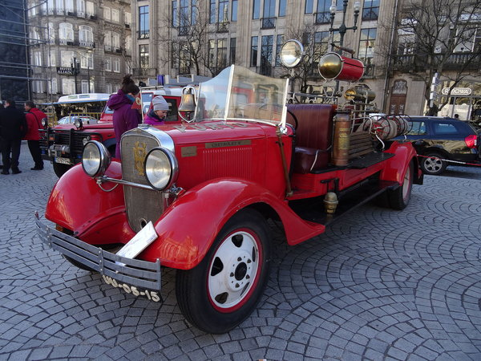

The Chevrolet History
On November 3, 1911, Swiss race car driver and automotive engineer Louis Chevrolet co-founded the Chevrolet Motor Company in Detroit with William C. Durant and investment partners William Little (maker of the Little automobile), James H. Whiting, Dr. Edwin R. Campbell (son-in-law of Durant) and in 1912 R. S. McLaughlin CEO of General Motors in Canada.
Actual design work for the first Chevy, the costly Series C Classic Six, was drawn up by Etienne Planche, following instructions from Louis. The first C prototype was ready months before Chevrolet was actually incorporated. However the first actual production wasn't until the 1913 model. So in essence there were no 1911 or 1912 production models, only the 1 pre-production model was made and fine tuned throughout the early part of 1912. Then in the fall of that year the new 1913 model was introduced at the New York auto show.

Chevrolet first used the "bowtie emblem" logo in 1914 on the H series models (Royal Mail and Baby Grand) and The L Series Model (Light Six). It may have been designed from wallpaper Durant once saw in a French hotel room. More recent research by historian Ken Kaufmann presents a case that the logo is based on a logo of the Coalettes
coal company. An example of this logo as it appeared in an advertisement for Coalettes appeared in the Atlanta Constitution on November 12, 1911. Others claim that the design was a stylized Swiss cross, in tribute to the homeland of Chevrolet's parents. Over time, Chevrolet would use several different iterations of the bowtie logo at the same time, often using blue for passenger cars, gold for trucks, and an outline (often in red) for cars that had performance packages.
Louis Chevrolet had differences with Durant over design and in 1914 sold Durant his share in the company. By 1916, Chevrolet was profitable enough with successful sales of the cheaper Series 490 to allow Durant to repurchase a controlling interest in General Motors. After the deal was completed in 1917, Durant became president of General Motors, and Chevrolet was merged into GM as a separate division. In 1919, Chevrolet's factories were located at Flint, Michigan; branch assembly locations were located in Tarrytown, N.Y., Norwood, Ohio, St. Louis, Missouri, Oakland, California, Ft. Worth, Texas, and Oshawa, Ontario General Motors of Canada Limited. McLaughlin's were given GM Corporation stock for the proprietorship of their Company article Sept. 23, 1933 Financial Post page 9. In the 1918 model year, Chevrolet introduced the Series D, a V8-powered model in four-passenger roadster and five-passenger tourer models. Sales were poor and it was dropped in 1919.
Beginning also in 1919, GMC commercial grade trucks were rebranded as Chevrolet, and using the same chassis of Chevrolet passenger cars and building light-duty trucks. GMC commercial grade trucks were also rebranded as Chevrolet commercial grade trucks, sharing an almost identical appearance with GMC products.
Chevrolet continued into the 1920s, 1930s, and 1940s competing with Ford, and after the Chrysler Corporation formed Plymouth in 1928, Plymouth, Ford, and Chevrolet were known as the Low-priced three
. In 1929 they introduced the famous Stovebolt
overhead-valve inline six-cylinder engine, giving Chevrolet a marketing edge over Ford, which was still offering a lone flathead four (A Six at the price of a Four
). In 1933 Chevrolet launched the Standard Six, which was advertised in the United States as the cheapest six-cylinder car on sale.
Chevrolet had a great influence on the American automobile market during the 1950s. In 1953 it produced the Corvette, a two-seater sports car with a fiberglass body.